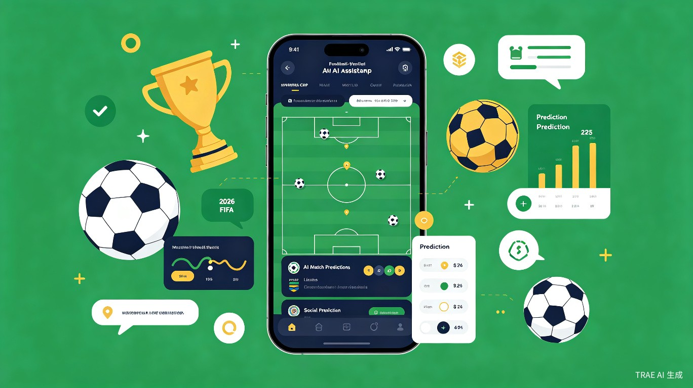
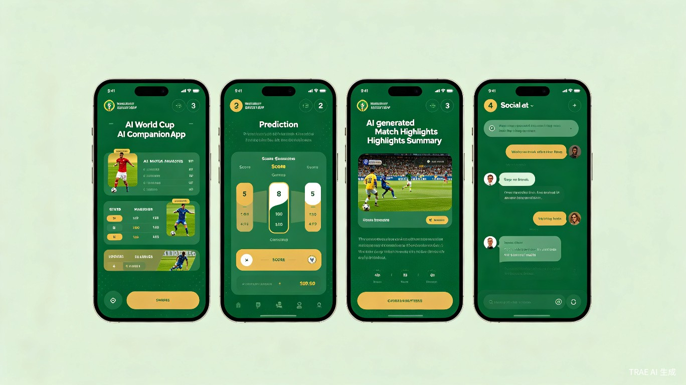
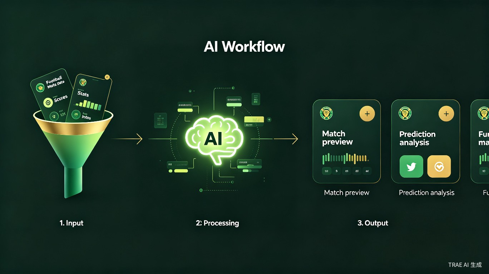
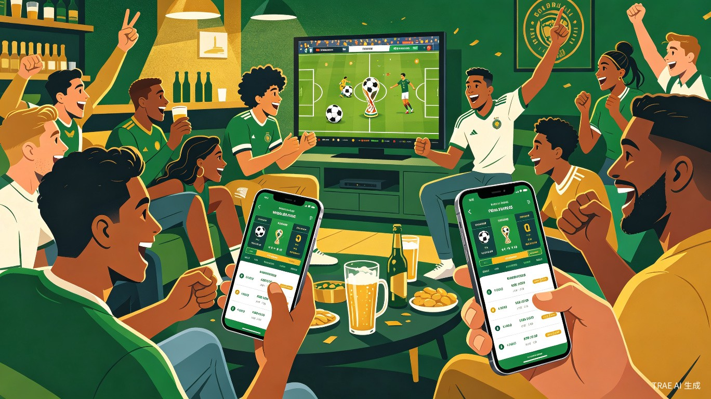
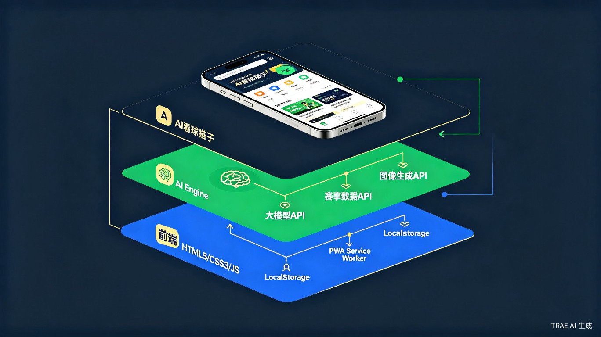

2026 世界杯智能观赛助手 — 你的 AI 球迷好友，让每一场比赛都更有趣

2026 美加墨世界杯正在火热进行中，小组赛从 6 月 12 日持续到 6 月 28 日，每天凌晨到中午都有比赛。但普通球迷的观赛体验，真的够好吗？
32 支球队、72 场小组赛，数据满天飞。普通球迷只想知道"这场谁赢面大"，却要在各平台翻半天。
凌晨 3 点爬起来看球，朋友圈没人在线，想吐槽找不到人，赢了没人分享，输了没人安慰。
传统足球竞猜要么太专业要么太简单，缺乏"和朋友轻松 PK"的中间地带，小白球迷参与不进来。
看完比赛想看点有趣的复盘，但只有干巴巴的数据统计和官方战报，缺少 AI 生成的趣味解读。
一款面向移动端的 AI 驱动观赛伴侣，用 AI 让看球从"一个人默默看"变成"和懂球的朋友一起嗨"。产品采用"AI Agent + 社交互动"双引擎架构，围绕世界杯观赛全链路（赛前-赛中-赛后）设计功能闭环。
每场比赛前，AI 自动生成"3 分钟看懂这场球"的智能简报。不需要你是足球专家，AI 帮你秒变"懂球帝"。
赛前邀请好友一起预测比分，AI 给出参考预测和赔率分析。支持创建私人房间，和同事、同学、球友来一场轻松的预测竞赛。
比赛结束后，AI 自动生成趣味战报，用"梗文化"风格解读比赛亮点，一键生成可分享的赛事海报和段子。
根据你关注的球队和时区，AI 智能推荐"必看比赛"，自动设置开赛提醒。再也不用担心凌晨爬起来却发现是场无聊的比赛。

从赛事数据到用户可消费内容的全链路 AI 处理流程
实时获取赛事数据：比分、球员统计、历史交锋、赔率变动等多维数据源
REST API + WebSocket大模型对结构化数据进行语义分析，生成比赛预测、看点提炼、趣味文案
AI 大模型 + Prompt 工程将 AI 输出与 UI 模板结合，生成简报卡片、海报图片、分享长图
Canvas API + 模板引擎通过推送通知、应用内消息、社交分享链路将内容送达用户
PWA Push + Web Share API
零门槛上手，打开就能用，不需要注册也能体验核心功能。
首次打开选择你支持的球队，AI 自动为你定制个性化内容
赛前收到 AI 生成的比赛分析，3 分钟了解这场球的核心看点
和好友 PK 预测，边看边聊，赛后一键生成趣味海报分享

四年看一次世界杯，想参与话题但不懂球。AI 简报让他们快速"入戏"。
宿舍集体看球，预测 PK 是社交货币。免费、好玩、能分享是关键。
凌晨偷偷爬起来看球，需要赛程提醒和快速了解比赛动态。
全家一起看球，AI 趣味解读让不懂球的家人也能乐在其中。
2026 世界杯小组赛（6.12-6.28）与大赛初赛时间窗口高度重合，天然自带流量和话题热度。AI + 世界杯是当下最火的组合。
预测 PK 和趣味海报分享天然具备社交传播属性，用户自发分享到朋友圈、微信群，实现零成本获客。
鸿蒙 7 刚发布 AI Agent 操作系统，AI Agent 商业化加速。本项目展示了 AI Agent 在生活娱乐场景的真实落地能力。
广告植入、品牌联名、付费预测联赛、虚拟礼物打赏等多种变现方式，世界杯期间流量峰值可带来可观收益。
基于 TRAE Work 全程开发，采用移动端优先的纯前端 Web App 架构。无需后端服务器，所有逻辑在浏览器端完成，通过调用外部 API 获取赛事数据和 AI 能力。

大赛要求作品使用 TRAE Work / TRAE IDE 创作，纯前端方案可以最大化利用 TRAE 的 AI 编码能力，无需搭建后端服务器。所有用户数据存储在浏览器本地（LocalStorage / IndexedDB），社交功能通过分享链接 + 邀请码实现"无后端社交"。AI 能力通过调用大模型 API 实现，赛事数据通过公开 API 获取。整个产品可以部署为静态网站，零运维成本。
以下为四大核心功能模块的具体实现逻辑，从数据获取到 AI 处理到 UI 展示的完整链路。
核心思路：赛事数据 API 获取结构化数据 → 组装为 Prompt → 调用 AI 大模型生成自然语言简报 → 渲染为卡片 UI
核心思路：基于 LocalStorage + 分享链接实现"无后端社交"，房间数据以 JSON 编码到 URL 参数中传递
核心思路：赛后数据 + Prompt 工程 → AI 生成多风格文案 → Canvas API 渲染为可分享图片
核心思路：预置完整赛程数据 + PWA 推送能力 + AI 智能推荐算法
完成创意提案 HTML，设计核心页面 UI 原型和交互流程，确定技术选型
实现赛程展示与筛选、AI 赛前简报生成（对接赛事 API + AI API），完成核心页面开发
实现预测房间创建与分享、AI 赛后趣味报生成、海报 Canvas 渲染、PWA 推送通知
UI 精细化打磨、性能优化、多设备适配、社交分享链路完善、AI Prompt 调优
产品演示 + 技术架构讲解 + 商业价值阐述 + 现场答辩
2026 世界杯正在火热进行中，AI + 体育娱乐是当下最热的赛道。这个创意，值得被看见。
TRAE AI 创造力大赛 | 生活娱乐赛道